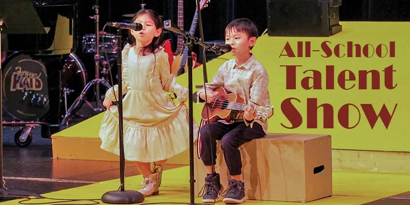

Фестивал „Училището има талант“
Всяка година в нашето училище има ученици, които пеят, танцуват, рисуват, правят интересни проекти или са силни в спорта. Този път всички ще се покажат на едно място – на фестивала „Училището има талант“.
Стани участник!
Какво ви очаква?
Фестивалът ще продължи през целия ден. Ще има сцена за музикални изпълнения и танци, изложба с рисунки на ученици от всички класове и място, където проектите ще бъдат представени на гостите. Накрая ще има и спортни състезания на игрището. Каним ученици, родители и учители!
- Музикални изпълнения
- Танцово шоу
- Изложба на рисунки
- Демонстрация на ученически проекти
- Спортни предизвикателства
Кога и къде?
Място: училищният двор и сградата на училището
Дата: 23 май 2026 г.
Час: от 10:00 ч.
Програма
| Час | Събитие | Място |
|---|---|---|
| 10:00 | Откриване | Училищен двор |
| 10:30 | Музикални изпълнения | Сцена |
| 11:30 | Изложба на рисунки | Фоайе |
| 12:00 | Спортни предизвикателства | Игрище |
| 13:00 | Танцово шоу | Сцена |
Участници
Вече са се записали ученици от 1. до 12. клас – певци, танцови групи, художници и малки изобретатели. Списъкът с всички участници ще бъде обявен няколко дни преди фестивала. Ако и ти искаш да се покажеш, натисни бутона по-долу.
Стани участник!Контакти
Ако имате въпроси, пишете ни:
Имейл: talant@uchilishte.example
Телефон: 0888 123 456
Организатор: г-жа Иванова, класен ръководител на 10 „б“ клас